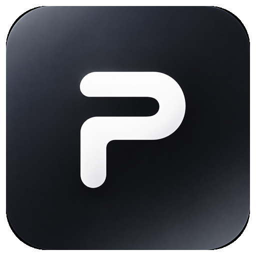

Открываем Pulse…
Секунду — возвращаем вас в приложение.
Браузер спросит, можно ли открыть Pulse, — нажмите «Открыть». Поставьте галочку «Всегда разрешать», и в следующий раз всё пройдёт без вопросов.

Секунду — возвращаем вас в приложение.
Браузер спросит, можно ли открыть Pulse, — нажмите «Открыть». Поставьте галочку «Всегда разрешать», и в следующий раз всё пройдёт без вопросов.